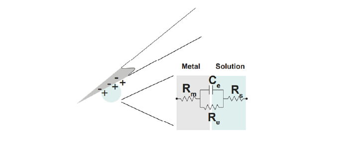

Electrodes¶
The electrode detects changes in the electric potential of the extracellular fluid due to neuronal activity, and passes this signal on to the rest of the recording system.
Extracellular microelectrodes are usually made from metallic conductors. A thin insulated metal wire with an exposed tip is the most basic, and still widely used, device for in vivo extracellular recording from brains. Twisting four such wires gives you a tetrode. Metals such as platinum, gold, tungsten, iridium, titanium nitride, stainless steel, iridium, iridium oxide, and alloys, nickel-chrome, platinum-iridium and platinum-tungsten have all been used in neural electrodes.
The electrode detects changes in electric potential¶
The transition from ion flow in the extracellular space (neural activity) to electron (electrode) flow is made through the double layer interface. When a metal is placed in a saline solution two phenomena occur: water dipoles close to the metal surface become oriented, and assuming the metal surface is negatively charged, the solution close to the metal surface become depleted of negative ions (anions), leaving behind a cloud of positive ions (cations). This cloud of cations screens the electric field caused by the excess of charge on the metal. Electroneutrality across the interface requires that the charge on the metal is always equal and opposite to the total charge on the solution side of the interface (Musa et al., 2012). The resulting charge distribution - two narrow regions of equal and opposite charge - is known as the electrical double layer (EDL). The double layer region (represented in pink in the schematics) has the ability to separate charges on both sides, and therefore a capacitance ‘Ce’. The double layer also opposes the direct flow of current across it, and therefore has a resistance ‘Re’.

We can describe the electrical behaviour of electrodes by making an ‘equivalent circuit’, getting rid of the specific shape or material and just representing the electrical properties of the double layer interface:
In the above figure, the double layer interface between the solution and the electrode is represented by a parallel resistance and capacitance, in combination with resistances Rm (metal) and Rs (solution) in series.
Re represents leakage resistance of the electrode; the charge transfer due to charge carriers crossing the electrical double layer.
Ce is the capacitance of the electrical double layer at the interface of the exposed metal and the solution.
Rm (metal) is the resistance within the electrode itself, which depends on what the electrode is made of.
Rs (solution) is the resistance of the fluid surrounding the electrode.
Because the resistance of the extracellular fluid Rs is small and independent of the electrode or acquisition system, we often simplify our equivalent circuits by leaving this value out.
There are two general types of electrode, ‘non-polarised’ and ‘polarized’. Each has a different mechanism through which ion flow in the solution leads to electron flow in the electrode.
Non-polarized electrodes¶
The well-known silver-silver chloride (Ag-AgCl) electrode approaches the ideal nonpolarizable type. In these ‘charge transfer’ electrodes, surface-confined species are oxidized and reduced (Bard & Faulkner, 2001, Merrill et al., 2005). Non-polarizable electrodes have a small Re, allowing charge-transfer across the electrode-solution interface. If Re is small, it bypasses the capacitor Ce, thus providing a direct path for the measurement of steady potential levels.
Polarized electrodes¶
The tungsten microelectrode is considered a ‘polarized’ electrode. Polarized electrodes have large Re values, in the order of several megaOhms, and so they resist direct flow of charges across the double layer. Instead, the transition from ion flow in the solution to electron flow in the electrode is capacitive. The double layer will separate charges, with negative charges inside the electrode and positive charges on the side of the extracellular fluid holding each other in place. When cellular activity causes a redistribution of ions in the extracellular fluid, the resulting increase or decrease in attractive force will recruit or release electrons in the electrode. Either direction, a current will flow inside the electrode.
Therefore, processes in polarizable electrodes are purely electrostatic and caused by the charging and discharging of the double layer capacitance. Although charge does not cross the interface, currents inside the recording system can flow when the potential or solution composition changes (Cooper, 1971).
To give an example of a polarized electrode, a tungsten microelectrode like the one used by Hubel and Wiesel in the 1950’s and 60’s has:
Ce ~ 0.2 pF / um2 ~ 10 - 20 pF (unplated)
Re ~ 10 to 100 MOhm.
Rm ~ 10 to 100 Ohm (Rm= (resistivity x length)/ cross sectional area)
References¶
Bard, A. J., & Faulkner, L. R. (2001). Electrochemical methods Fundamentals and Applications. Molecular Biology (Second, Vol. 8). John Wiley & Sons, Inc.
Merrill, D.R., Bikson, M., and Jefferys, J.G.R. (2005). Electrical stimulation of excitable tissue: design of efficacious and safe protocols. Journal of Neuroscience Methods 141, 171–198.
Musa, S., Rand, D.R., Cott, D.J., Loo, J., Bartic, C., Eberle, W., Nuttin, B., and Borghs, G. (2012). Bottom-Up SiO2 Embedded Carbon Nanotube Electrodes with Superior Performance for Integration in Implantable Neural Microsystems. ACS Nano 6, 4615–4628.
Nelson, M.J., Bosch, C., Venance, L., and Pouget, P. (2013). Microscale Inhomogeneity of Brain Tissue Distorts Electrical Signal Propagation. J. Neurosci. 33, 2821–2827.
Ray Cooper. (1971). Recording Changes in Electrical Properties in the Brain in Methods of Psychobiology. (R. D. Myers, Ed.) (Volume 1). London and New York: Academic Press.